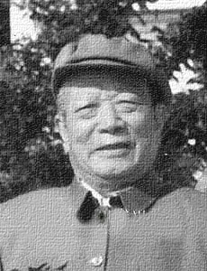

周企何
周企何（1911—1988），原名园园，我国著名川剧演员；四川成都人；五岁入太洪班学艺，演娃娃生，九岁开始在成都登台演出，1926年入成都三庆会，从师唐阴甫，习文武小生；1930年倒嗓后学丑；曾搭班在四川各地演出；1935年后主演《梅花簪》、《做文章》、《迎贤店》等剧，受到观众赞扬；建国后担任四川省川剧院副院长，对川剧传统表演艺术有所发展；先后参与整理的《御河桥》、《彩楼记》、《玉簪记》等，都有创新；1952年参加第一届全国戏曲观摩演出大会获得一等奖，1980年加入中国共产党，1988年去世。
人物生平
周企何，男，著名川剧丑角。四川成都人，原名圆圆；父母早逝，4岁时被送给成都凤凰山附近一户贫苦农民；不久，遇上一位唱花脸的流浪艺人何玉山，见他机灵乖巧，便收为养子，随他江湖学艺。后来，为了纪念这位好心的穷苦艺人，他将原名周圆圆改名周企何。
少时因家贫投师原太洪班名生角高青山门下学戏；同时又拜名花脸何玉山为师。不久，随师入鉴古堂深造，9岁便登台唱娃娃生。一年后鉴古堂与名小生王治安的班子合并为共和堂，他11岁时便随班到嘉定（乐山）演出。这时，业师何玉山不幸病逝，为纪念恩师，遂改名企何。之后，转回成都，拱过宋书田的结仙剧部和张少华的连城剧部，仍然演唱《安安送米》、《罗成修书》等一批娃娃生戏。
民国十三年（1924），周企何经张少华介绍进入三庆会，向名小生唐荫甫参师继续工小生行。这期间，他向师傅及师爷唐广体学了不少三庆会常演的戏。如《离燕哀》、《风筝误》、《刀笔误》、《情天侠》、《情探》、《柴市节》等。18岁左右，不幸倒噪，不得已学打鼓。19岁时，在师爷唐广体的帮助下，正式改学丑角。
周企何在戏班里，一贯勤学好问，善于模仿他人演技；尤其是改学丑行后，对名丑唐广体的每次演出，他都要仔细看，认真地记。唐老师也诲人不倦地把自己的表演经验传授给这位好学的门徒。同时，企何还经常抽空向三庆会中的老小丑陶金山请教，获益匪浅。他经过一段时间的刻苦努力，在24岁里，便能独立演出《抚琴会客》、《梅花簪》、《瞎子算命》、《做文章》等丑角戏了。不久，他又向名丑鄢炳章、周海波学习《秋江》等剧，并在所学的基础上，加以发展创造，形成自己独特的风格。
建国后，他参加全国第一届戏曲观摩演出大会，同阳友鹤合演《秋江》一戏，获得了演员一等奖。1953年，他参加了赴朝慰问团，演出了《迎贤店》等戏。1954年在影片《川剧集锦》中同陈书舫合拍了《秋江》。1980年，已高达69岁高龄的周企何，还随四川省川剧院赴香港演出，除担任副团长兼艺术顾问外，并演出了他的拿手好戏《迎贤店》，博得港澳同胞的盛赞。
他从早期在萧楷臣的影响下所养成的观书赏画的良好习惯，以及同诸多著名画家张大千、徐悲鸿、冯灌父、关山月、张采芹等的交往中，论画说戏，互相启发，引画理入戏理，博采众长，兼收并蓄，以念白和表演生动细腻、韵味浓郁，刻画人物惟妙惟肖著称，逐步形成了抒情写意的独特风格，在川剧舞台上塑造了一系列鲜明的艺术形象。如《秋江》中的艄翁，《画梅花》中的共天监、《请医》中的瘟医生、《迎贤店》中的店婆、《柴市节》中的留梦炎、《投庄遇美》的梅媪和《审玉蟹》中的宁欣等。
由于周企何热忱地献身于川剧事业，曾先后被选为重庆市人大代表，重庆市政协委员，成都市政协委员，四川省政协常委；并被接纳为中国戏剧家协会会员；还担任了四川省川剧院副院长等领导职务；1980年加入中国共产党。 1988年，周企何先生因脑溢血突发，经抢救无效，不幸去世。